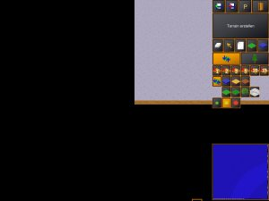
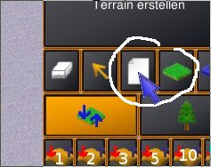
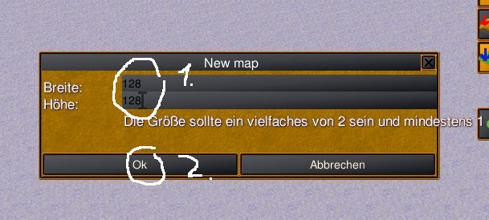
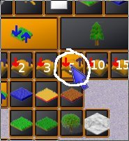
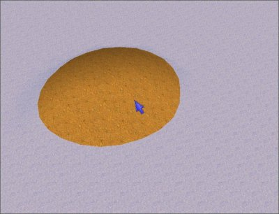
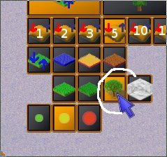
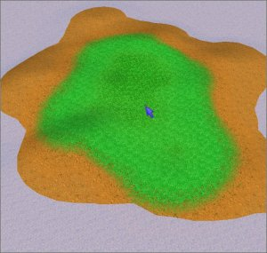
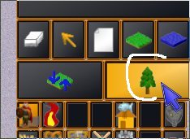
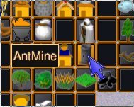
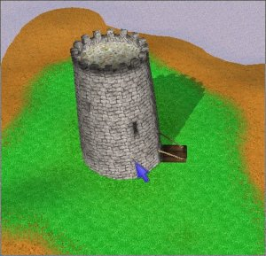

Michtoen, the lead-developer of Daimonin once wrote something about good level-designing. It went like this AFAIR: The important thing about good levels is not the size where you can run about, but its uniqueness. So every place in every map should have something that's unique to this place. This is the first rule when painting a terrain map.
Go into your antargis directory and type this followed by a RETURN (do not enter the $):
$ ./editor.rb
The editor will be started with a clean map. The window will look something like this:
You can move about by clicking the left mouse-button on the terrain and dragging around. If you want to start a new map, press the "white paper" on the right to make a new map.
When you've done so a new window will appear, where you can enter the size the new map should have. Enter a size like 64x64 or 128x128 into the two entry fields. After this click "Ok".
Now we will start painting some terrain. At the beginning all of the terrain in water. We're going to place some island into the sea. For this click onto the "5" number on the right. This number expresses the size of the region we're going to modify. The bigger the number the bigger the region.
Now you simply left-click onto the water. This will result in something like this:
Now click a little around and remember to try middle and right mouse button, too! Right mouse button will dig a hole into the ground, while the middle button will flatten the region.
Ok, for now the terrain looks pretty dumb, so we want to give it some nicer appearance. Click on the "Tree"-Button on the right like shown here:
Now again click on the terrain and you'll see that the texture will be modified. Play around a little with the different terrain types.
If you want to get back to the height-painting, click on the button with the up- and the down-vector. Next we will add a tower to the map. First you must enter the entity-placing mode. For this click on this button:
Next you select the entity-type you want to place on the map:
Place the tower on the map by left-clicking on the terrain.
